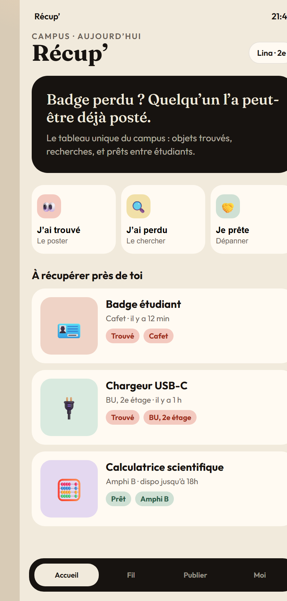
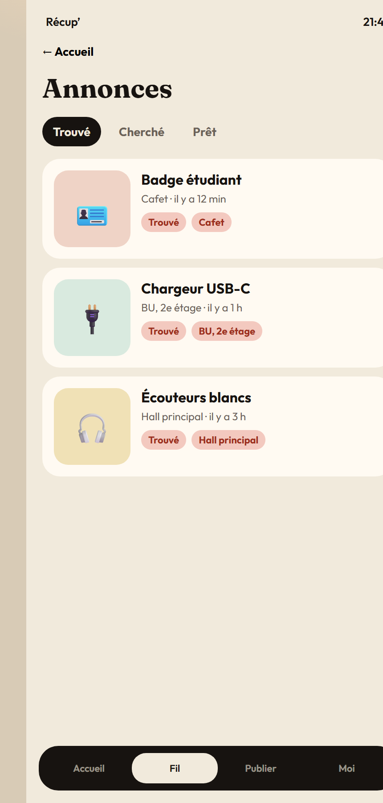
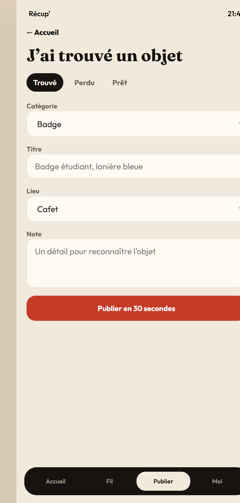
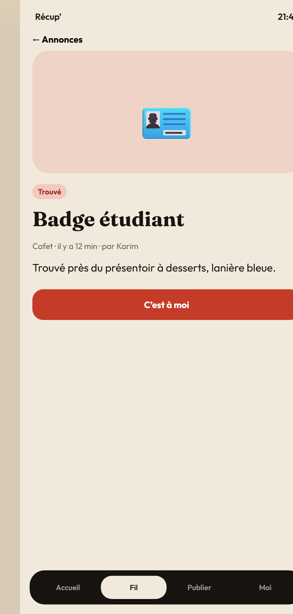
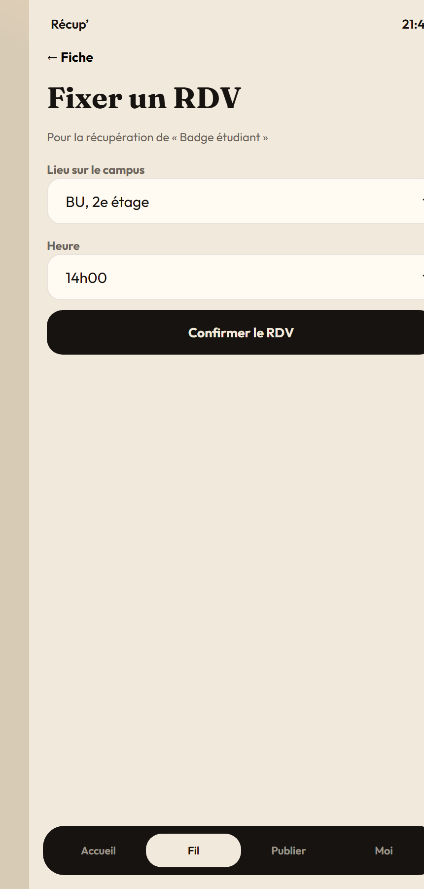
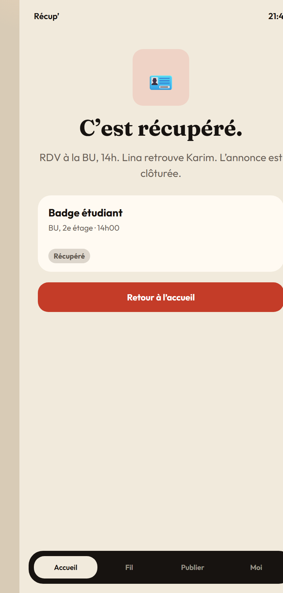

ESIG Tech Arena 2026 · Mini-challenge de présélection
Le tableau du campus pour retrouver ce que tu as perdu, et emprunter ce qu’il te manque.
Quel est le problème identifié ? Sur un campus, les objets bougent en continu : badges, chargeurs, calculatrices, écouteurs, clés USB, vestes. Quand un étudiant perd quelque chose, il n’a pas de lieu unique pour le signaler. Il écrit dans un groupe WhatsApp, demande autour de lui, passe parfois à l’accueil… et souvent il abandonne.
Celui qui trouve un objet est tout aussi bloqué : il ne sait pas à qui le rendre. L’objet finit dans un sac, un tiroir, ou à l’accueil sans que le propriétaire ne le sache. Le même chaos existe pour les prêts : avant un examen, on cherche une calculatrice dans la précipitation, sans savoir qui peut dépanner.
À qui ce problème se pose-t-il ? Aux étudiants au quotidien, surtout entre deux cours, à la BU, à la cafet, en amphi, et juste avant un partiel. L’accueil / la scolarité est concernée de façon secondaire : elle reçoit des objets sans canal simple pour les relier à leurs propriétaires.
Pourquoi ce problème mérite-t-il une solution ? Parce qu’il est fréquent, concret, et coûteux. Un badge à refaire, une calculatrice rachetée, des dizaines de minutes perdues à scroller un groupe, un stress inutile avant un examen. Les outils existants (WhatsApp, affichage papier, accueil) ne sont pas conçus pour ça : pas de photo structurée, pas de lieu, pas de statut « récupéré », pas de matching.
Récup’ est un tableau numérique du campus. En 30 secondes, un étudiant peut signaler un objet trouvé, publier un objet perdu, ou proposer / demander un prêt.
Chaque annonce a une catégorie, un lieu, une heure et un statut. Le propriétaire reconnaît son objet, contacte le trouveur, fixe un point de RDV sur le campus, puis clôture l’annonce. Le tableau reste propre. Le prêt suit la même logique : on voit ce qui est disponible maintenant, près de soi.
Avantages
Primaire : étudiants du campus, tous niveaux, au quotidien.
Secondaire : délégués, accueil, scolarité, qui peuvent y déposer les objets trouvés « officiels ».
Persona : Lina, 20 ans, 2e année. Elle a perdu son badge entre l’amphi et la cafet. Elle ouvre Récup’, voit une photo postée il y a 12 minutes par Karim, clique « C’est à moi », RDV à la BU.
Le prototype est une mini-application web cliquable. Les captures ci-dessous suivent le parcours de Lina et Karim.






prototype/index.htmllivrables/Recup-presentation.pptxlivrables/presentation.html